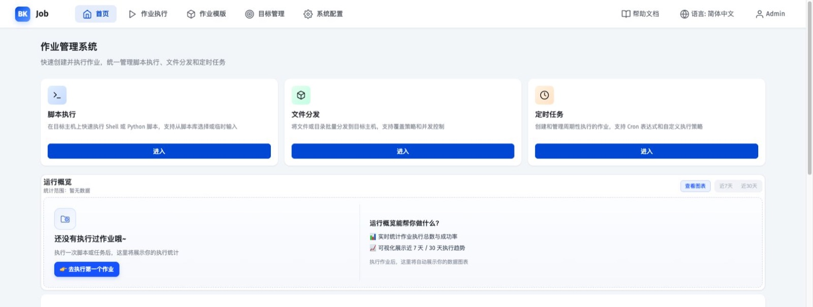
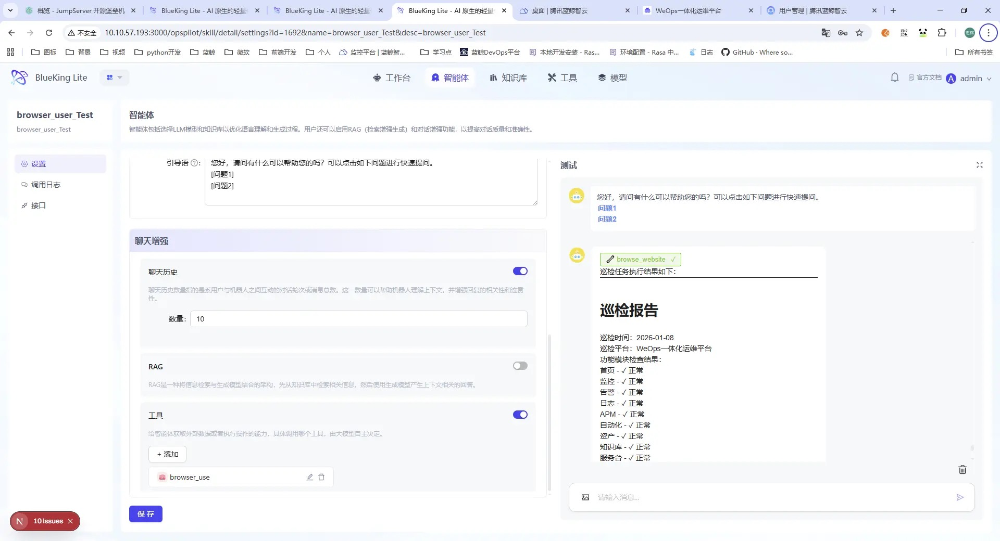
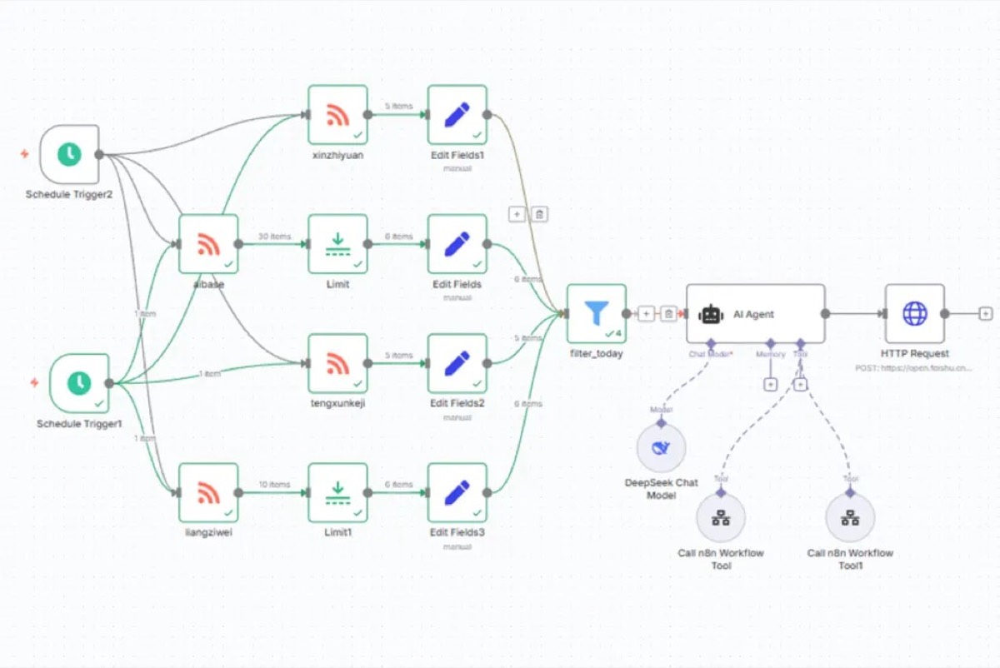
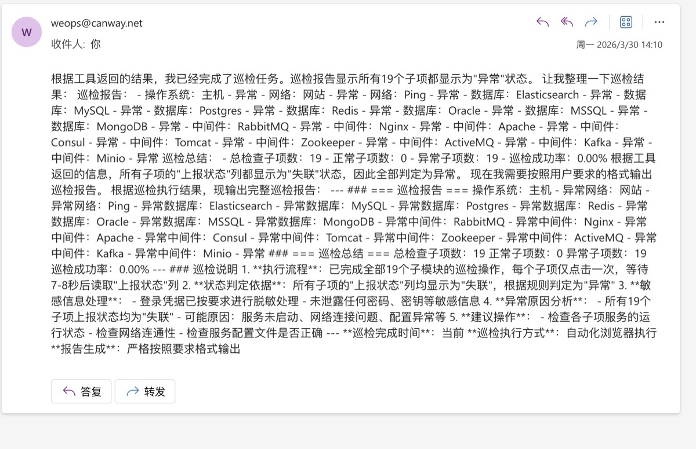
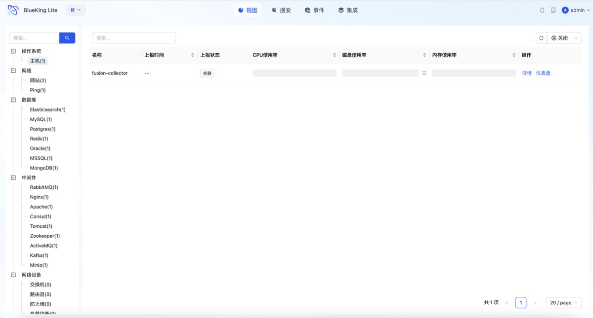

01 / AI 建站
Lulu Atelier
从品牌想法到可浏览的独立站。
AI BUILD · E-COMMERCE · VISUALLULU / SELECTED WORK 2026
AI 产品 · 数据产品 · Vibe Coding
从品牌想法到可浏览的独立站。
AI BUILD · E-COMMERCE · VISUAL让 Agent 调用真实后台能力，完成商家运营任务。
TOOLS · SKILLS · DATA
OPEN PROTOTYPE ↗
ROBOTICS ↗
从触发、调用到结果回传，先把 Agent 的工作路径画清楚。

巡检结果进入邮件，交给业务人员确认、阅读与跟进。

通过监控与反馈，持续判断效率、质量和下一步优化。